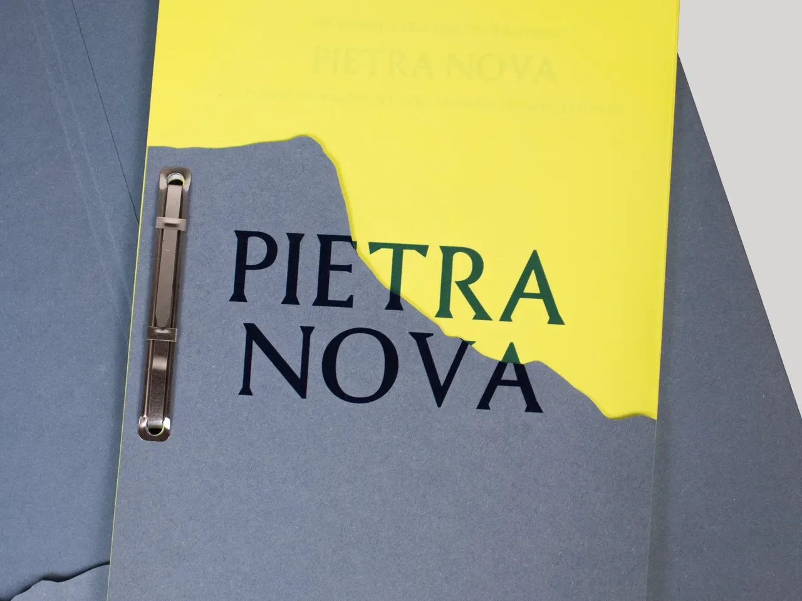
PIETRA NOVA
- 17 × 26 cm
- 2025
Spécimen du caractère typographique « Pietra Nova ». Cette typographie est pensée comme la version moderne d’un caractère antique. Elle se distingue par ses empattements marqués, ses formes contrastées et ses faibles ascendantes et descendantes. L’édition joue sur ses origines antiques en se présentant comme un dossier d’archives. Les inserts fluorescents montrent des explorations graphiques de la typographie. Caractère dessiné en binôme, réalisé à partir des archives de l’ÉSAD d’Amiens sur la base du caractère typographique « Pietra Romana » créé par Roger Morin.

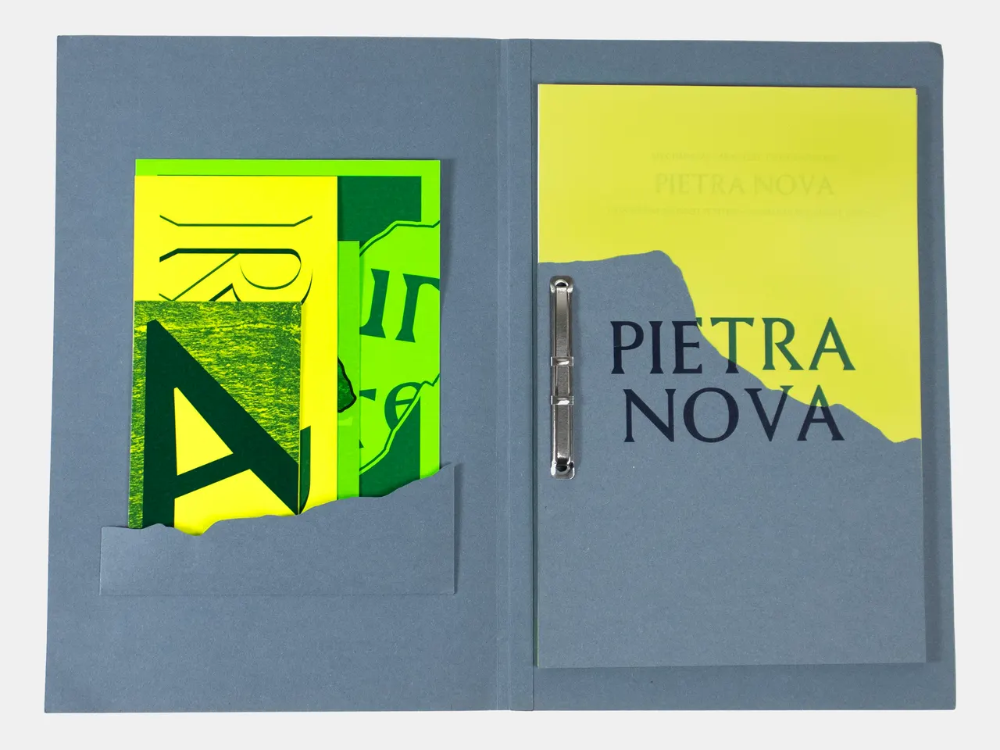

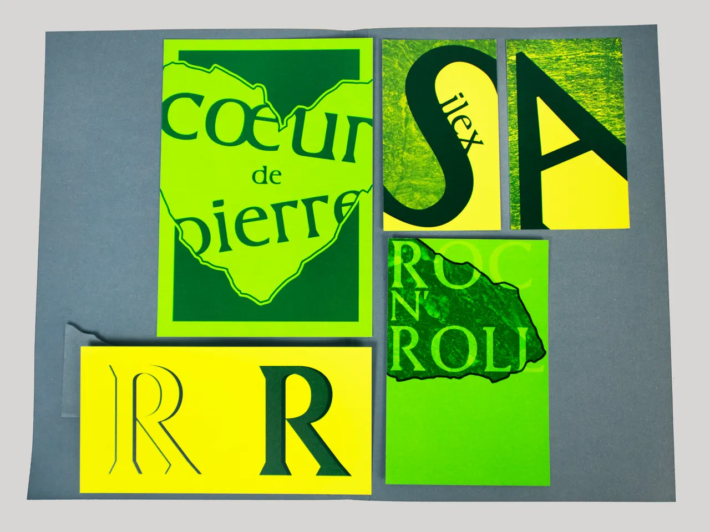

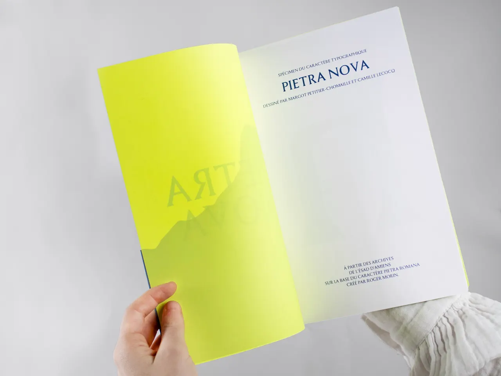

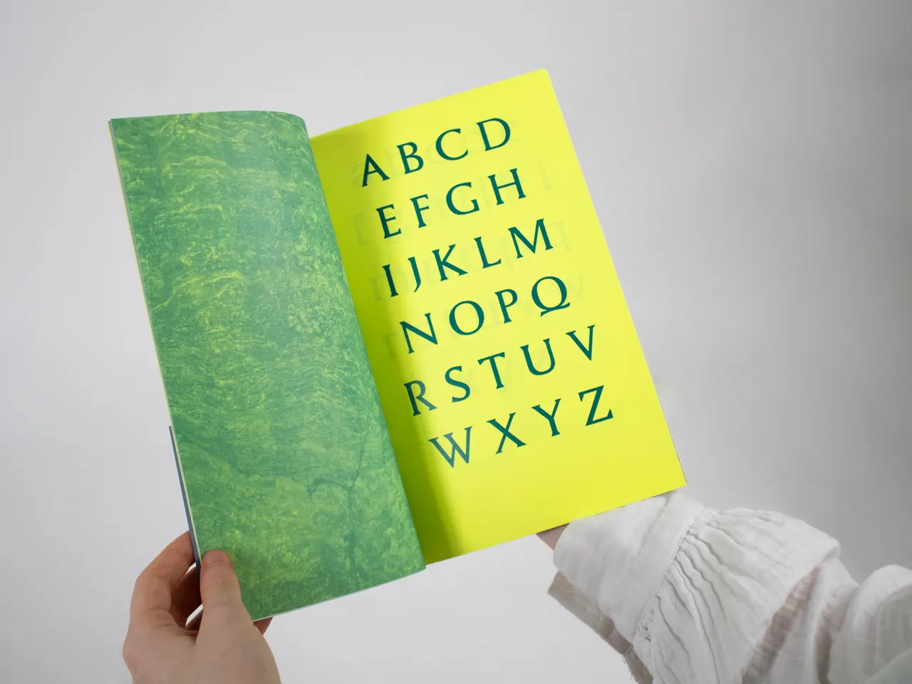

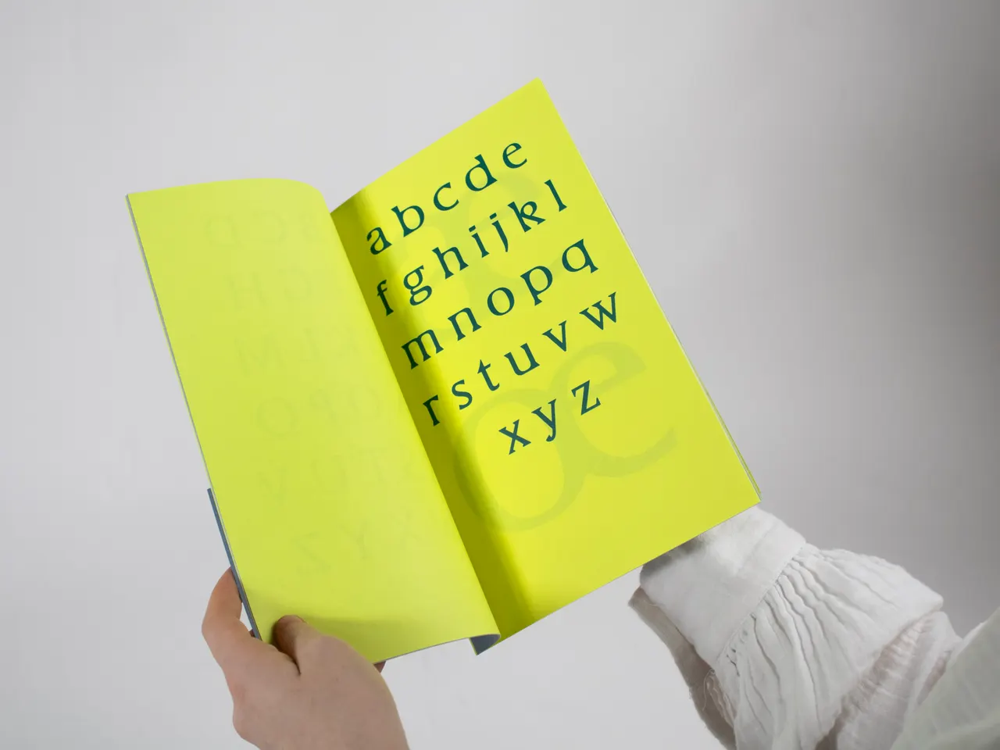

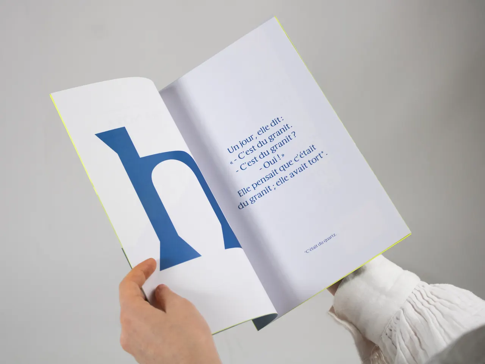

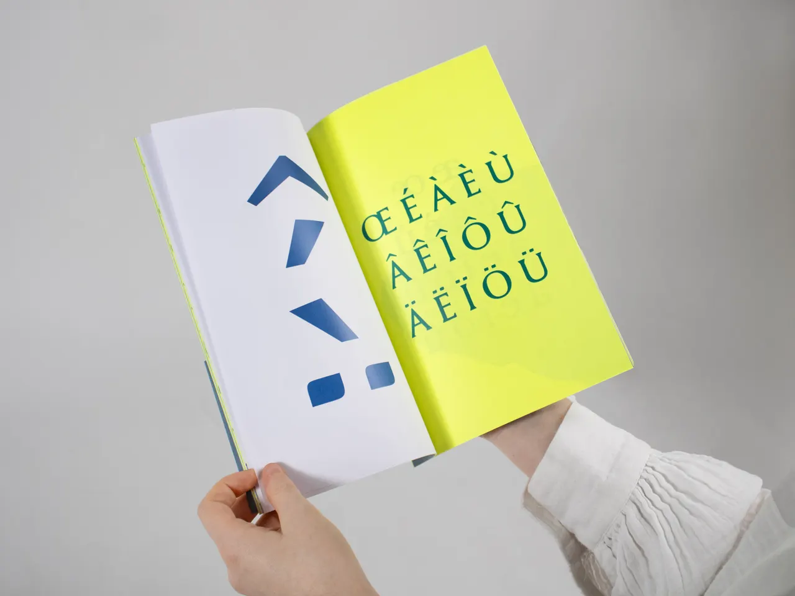

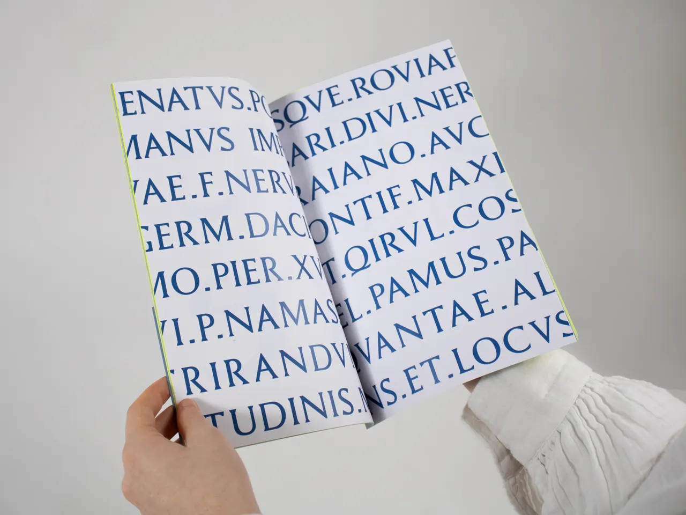

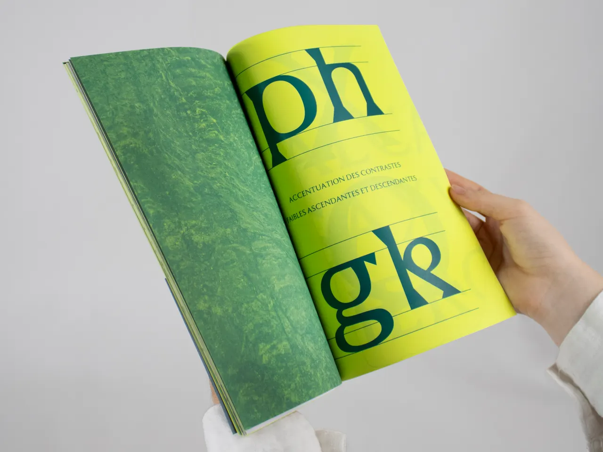

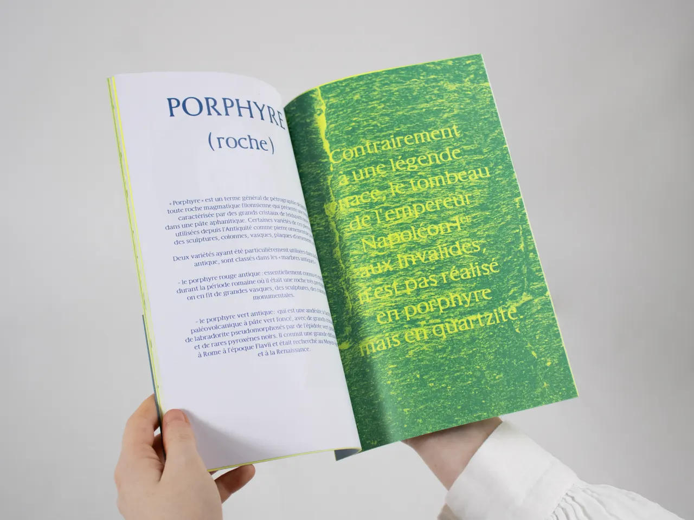

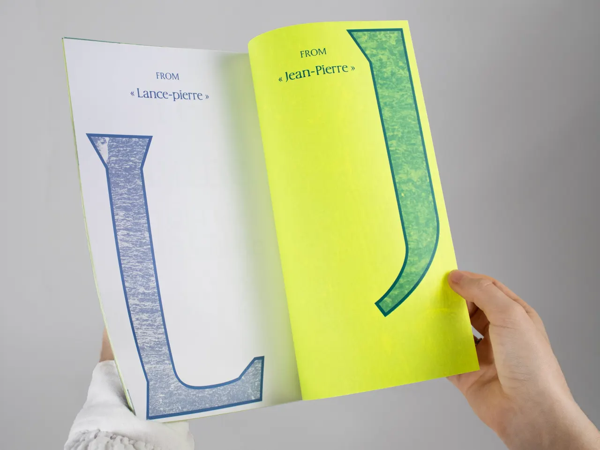